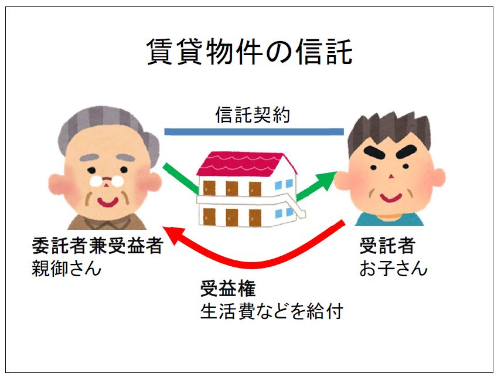

| 認知症による不動産・預金の凍結を防ぐ 家族信託・活用ガイド: ～はじめて家族信託（民事信託）にふれる一般の方を対象に分かりやすく解説～ 家族信託・相続・後見シリーズ | |
| 柴崎智哉 | |
| (2017) | |
認知症による不動産・預金の凍結を防ぐ
家族信託・活用ガイド
司法書士柴崎智哉
はじめに
本書は、自宅や賃貸物件などの不動産をお持ちの親御さんが認知症になった場合、どんな事で困るのかを予め知ってもらい、元気なうちに家族信託を組んでおくことによって対策ができる事をお知らせするために執筆致しました。
認知症になって判断能力がなくなり、ご本人では財産管理ができなくなると、通常は成年後見人をつけて、成年後見人が財産管理を行います。ところが、成年後見制度では色々な制約があり、次の様な声が聞こえてきます。
「空き家となった自宅が売れない。維持管理が大変。」
「相続税対策ができない。」
「親族が後見人になれなかった。申し立てたことを後悔。」
「専門職後見人の報酬で財産が目減りしていく。」
成年後見制度は、ご本人のためにご本人の財産を守る制度ですので、資産を活用したり、将来の相続人のために相続税対策をしたりすることはできないのです。
しかし、予め親御さんとご家族との間で家族信託を組んでおけば、ご家族が親御さんの財産を管理・処分できるようになります。その結果、親御さんが認知症になっても、住まなくなった自宅を必要に応じて売却したり、不動産の組替えや建設により相続税対策を継続したり、賃貸物件の運用を柔軟に行ったりすることが可能となります。
認知症対策は事前に準備しておかないと選択肢が限られてしまいます。一人でも多くの方に、家族信託が財産管理における認知症対策の一つの選択肢になり得ることを知って頂けると幸いです。
平成２９年７月
司法書士柴崎智哉
目次
第１章 認知症になると財産管理は？
平均寿命と健康寿命
健康寿命という言葉をご存知でしょうか。健康寿命とは「健康上の問題で日常生活が制限されることなく生活できる期間」のことです。従って、平均寿命と健康寿命の差は、「健康上の問題で日常生活に制限のある期間 」となります。厚生労働省の発表によると平成２５年の平均寿命と健康寿命の差は、男性で９．０２年 、女性で１３．４年 です（厚生労働省「平成２５年簡易生命表」「健康日本21（第二次）現状値の年次推移」参照）。
つまり、男女ともに、介護や認知症などの健康上の理由で、日常生活が制限されてしまう期間が１０年前後あると言うことになります。この日常生活が制限された約１０年間、その方の財産管理はどうすれば良いのかと言う問題が出てきます。
認知症患者の割合
次に高齢者のうちどれぐらいの割合の方が認知症であるのかを見てみましょう。厚生労働省の発表によりますと平成２４年における全国の６５才以上の高齢者３０７９万人のうち認知症患者は約４６２万人 と推計されています。また、認知症と健常者の中間の方（軽度認知障害の方）は約４００万人 と推計されています。この数をグラフにしてみましょう。
６５才以上の高齢者のうち約４分の１ が認知症患者または認知症と健常者の中間の方ということになります。７０才以上、８０才以上になれば、この認知症患者の割合は更に増えると思われ、認知症というのは決して他人事ではないと言えます。
判断能力がなくなるとどうなる？
それでは、認知症になって判断能力がなくなるとどうなるでしょうか。認知症になって困る代表例は、ご本人の預金口座からお金がおろせなくなることです。例えば、親御さんが定期預金をしていたとします。親御さんが認知症になって施設に移ることになったので、施設入所費に充てるため、お子さんが銀行に定期預金を解約に行ったらどうなるでしょうか。銀行員は「親御さんご本人が手続に来てください。」と言うでしょう。それに対して、お子さんが「親は認知症で来られません。」と答えれば、銀行員は「ご本人の意思確認ができないと定期預金は解約できません。認知症で判断能力がない場合は、成年後見人をつけてください。」と言うと思います。
普通預金であれば、親御さんのキャッシュカードを預かっており、暗証番号も知っていれば事実上お子さんがおろせるかもしれませんが、定期預金などでご本人が手続する必要がある場合は認知症で判断能力がないと厳しいのではないでしょうか。
不動産の場合はどうでしょうか。親御さんが認知症で施設に移ることになったので、親御さんの自宅不動産を売って、その売却代金を施設入所費に充てようとお子さんが考えたとします。しかし、親御さんが認知症で判断能力がない場合は、自宅不動産を売ることができないのです。不動産を売るときは、司法書士が売主さんの本人確認と意思確認をします。不動産の所有者本人が「売る」と言う意思表示をしないと売買の登記ができないのです。親御さんに判断能力がなければ、売買の登記を担当する司法書士は登記の依頼を断ります。不動産を売るには成年後見人をつけることになります（なお、成年後見人をつけたからと言って、必ず不動産が売れるとは限りません）。
成年後見制度とは
成年後見制度とは、判断能力が十分でない方を法律的に保護し、支えるための制度です。ご本人の判断能力を補うため、成年後見人などのご本人を援助する人を家庭裁判所が選び、成年後見人などがご本人のために活動する制度です。成年後見制度にはご本人の判断能力の程度によって後見・保佐・補助と言う３つの類型があります。ご本人の判断能力が全くない場合は、後見ということになり、成年後見人が選ばれ、成年後見人がご本人に代わって（日常生活に関する行為を除く）法律行為を行います。
親御さんが認知症で判断能力が全くない場合は、家庭裁判所で成年後見人を選んでもらい、成年後見人が親御さんに代わって、預貯金の管理や不動産の売却などを行うことになります。
成年後見のデメリット
さいたま家庭裁判所が作成した「後見申立の手引」に成年後見制度における注意事項が記載されているので引用します。
「本人の財産を投機的に運用 することや自らのために使用すること、親族などに贈与・貸付けをすることなどは、原則として認められません。相続税対策を目的とした贈与やアパート建築 等についても同様です。成年後見制度は本人の財産を保護 するためのものであり、推定相続人の利益を図るための制度ではない からです。」
成年後見制度は、ご本人の財産をご本人のために守る制度です。従って、資産活用はできません 。ご本人が預貯金で持っていたものは、そのまま預貯金で管理していきます。預貯金で不動産を買ったり、株や国債を買ったりすることも原則として認められていません。相続税対策 もご本人のためのものではないので認められません。ご本人が、判断能力がなくなる前において、家族たちのために相続税対策をやっていきたいと思っていたとしても、後見制度ではできないのです。
また、成年後見人をつけても不動産が売れるとは限らないと前述しましたが、これはご本人の居住用不動産を売る場合は、家庭裁判所の許可が必要だからです。ご本人に十分な預貯金があり、それで生活費等がまかなえる場合、家庭裁判所は居住用不動産の売却許可を出さない のではないかと思われます。居住用不動産とは現在住んでいるものだけではなく、過去に住んでいた不動産を売る場合にも家庭裁判所の許可が必要です。
それでは、居住用でない不動産の場合はどうでしょうか。居住用でなければ法律上は家庭裁判所の許可は要りませんが、実務上、成年後見人は家庭裁判所の意見を聞くと思われます。従って、居住用以外の不動産も成年後見人が売るのは、生活費等が足りないなどの理由がないと難しいと思われます。
なお、誰を成年後見人に選ぶかを最終的に決めるのは家庭裁判所です。ご家族を後見人の候補者として申立をすることもできますが、必ずしもご家族が成年後見人になれるとは限りません。ご家族間で反対する人がいたり、ご本人の財産が多額であったり、複雑な事情があるケースなどでは、家庭裁判所は司法書士や弁護士などの専門職を成年後見人に選んでしまうことが多いです。ご家族が成年後見人に選ばれなさそうだからと言って、後見の申立を取り下げようとしても、家庭裁判所の許可がなければ取り下げはできません。
一度、司法書士や弁護士などの専門職後見人がついてしまえば、ご本人の判断能力が回復しない限り、ご本人が亡くなるまで成年後見人がついたままとなります。従って、専門職後見人の報酬が継続的に発生することになり、その報酬目安は月額で２万円から６万円ぐらいです（預貯金などの流動資産の金額に応じて家庭裁判所が報酬額を決めます）。仮に月３万円だとしても、１年で３６万円、１０年で３６０万円が後見人報酬としてご本人の財産から支出される計算になります。
ご家族が成年後見人に選ばれれば専門職後見人の報酬は発生しませんが、成年後見人に選ばれたご家族は、家庭裁判所の監督下におかれ概ね１年に１回ぐらい報告書を提出していくことになります。
以上のとおり成年後見制度のデメリットを述べてきましたが、予めご家族間で家族信託を組んでおくことによって対策ができることもあります。次の章では家族信託について解説していきます。
第２章 家族信託の仕組み
家族信託とは
家族信託とはどういった仕組みなのでしょうか。例えば、親御さんがアパートなどの収益物件を持っているケースを想像してみてください。簡単に言うと、親御さんがご家族（例えば、お子さん）にアパートの管理・処分を任せるのが家族信託です。アパートなどの財産を親御さんがお子さんに託し、親御さんのためにお子さんが財産を管理・処分して行く手続です。
上の図で説明していきます。まず、親御さんが持っているアパートをお子さんに託します。形式的にはアパートの名義はお子さんになります。しかし、財産の権利は親御さんが持っています。通常の所有権では権利と名義は一致していますが、信託することによって権利は親御さん、名義はお子さんに分けられるのです。そして、お子さんに財産の管理・処分権限を与えることによって、お子さんが財産の管理をしてきます。アパートの場合は、お子さんが家賃を回収したり、修繕費や固定資産税などの必要経費を払ったりします（場合によっては、お子さんは財産を売ることもできます）。アパート経営による利益はお子さんのものになる訳ではありません。お金はお子さんの通帳で管理していきますが、権利のある親御さんに生活費などとして給付していきます。
親御さんがしっかりしているうちにお子さんに信託しておけば、その後、親御さんが認知症になっても、信託された財産はお子さんが管理していけるのです。不動産を売却する必要がでたときも、親御さんに成年後見人をつけることなく、お子さんの権限で不動産を売れます。売却代金はお子さんのものになる訳ではなく、あくまで信託財産ですから、管理はお子さんがしますが親御さんのために生活費の給付などとして使うべきものです。
なお、財産を託されたお子さんのことを受託者 と呼んでいます。財産をもともと持っていた親御さんを委託者 と呼び、信託財産から利益を受ける人である親御さんを受益者 とも呼びます。上記の例では、親御さんは委託者と受益者という二つの立場に立っています。
家族信託を言葉にまとめると「ご自身（親御さん・委託者）の財産を、信頼できる家族（お子さん・受託者）に託し、利益を受ける人（親御さん・受益者）のために、特定の目的に従って管理・処分してもらう財産管理の方法」と言えます。特定の目的とは、ケースによって違いますが、例えば、「親御さんの生活費・介護費・医療費などを給付すること」、「親御さんの安定した生活の支援をすること」などが挙げられます。
信託銀行でなくても受託者になれる？
「ご家族に信託する」と言うと「信託銀行や信託会社でなくても受託者になれるのだろうか？」と思われるかもしれません。営業で信託を引き受ける場合は、信託業法により免許などが必要となります。しかし、営業でなければ、免許などがなくても受託者となれるのです。営業とは、受託者が不特定多数を相手に反復・継続 して信託の引き受け（信託の受託）を行い、その報酬を得ようとする場合です。親御さんの財産をお子さんに信託する場合は、不特定多数を相手に反復・継続している訳ではありませんから、信託業法の免許は不要です。
なお、家族信託の場合でも、受託者が報酬をもらうことは可能です。報酬額は妥当な範囲内にしないと問題がおきるかもしれませんので、成年後見人の報酬を参考に決めたら良いと思われます。
信託銀行は関係ない
家族信託は、信託銀行の「遺言信託」サービスとは全く関係ありません。これと混同してしまうと家族信託の理解が難しくなります。信託銀行の「遺言信託」サービスは信託法上の信託ではありません。単に、遺言書の作成をサポートして、遺言書を保管し、相続開始後に遺言執行をするのが、信託銀行の「遺言信託」サービスです。
家族信託で財産を託されるのはご家族です。信託銀行が財産を託される訳ではありません。
家族信託 基本スキーム図
家族信託の仕組みについて図を使って詳しく見てみましょう。
左上と左下に親御さんが二人描いてありますが、委託者と受益者の立場としてそれぞれ描いているので、この二人は同一人物です。
家族信託を組むときは、まず委託者である親御さんと受託者となるお子さんとで信託契約を交わします。そして、信託する財産の名義を受託者であるお子さんに変えます。不動産であれば登記上の名義が形式的には受託者であるお子さんになります。お金を信託する場合は、受託者であるお子さんが開設した信託口口座に親御さんがお金を振り込みます。
信託契約書の中で受託者であるお子さんにどんな管理・処分権限があるのかを定めておきます。権限の例としては、「不動産・お金を管理する」、「不動産を貸す」、「不動産を売る」、「信託したお金で建物を建てる」、「信託したお金で不動産を買う」などです。どんな権限を与えるかは信託契約書で親御さんが決められます。
財産を託されたお子さんは、権限の範囲内で管理をしてきます。アパートなどの賃貸物件を信託された場合は、お子さんが家賃を回収し、必要な経費を払い、アパート経営をしていくのです。そこからの利益を受益者である親御さんに給付していきます。いくら給付するのかは、信託契約書で定めておけますので、例えば「親御さんが要求した額を支給する」とか「月何万円支給する」とか自由に設計できます。
なお、信託財産からの利益の給付を受ける権利（と監督権）を受益権 と呼んでいます。
用語を整理すると次のようになります。
・委託者 ： 財産を託す人
・受託者 ： 財産を託される人（形式的な所有者）
・受益者 ： 信託財産からの利益の給付を受ける人（実質的な所有者）
・受益権 ： 信託財産からの利益の給付を受ける権利と監督権
信託財産の実質的な所有者は受益者です。上記の図では、財産をもともと持っていた委託者と信託財産の実質的な所有者である受益者がどちらも親御さんで同一人物です。委託者と受益者が同じ人であれば、信託を組んでも贈与税や不動産取得税は発生しません。財産の名義が形式的には受託者であるお子さんに変わりますが、委託者と受益者がどちらも親御さんですから贈与税は課税されないのです。
なお、家族信託に適する財産は不動産やお金です。中小企業のオーナーの場合は、非上場株式を信託することもあります。また、上場株式については、私の知る限り本書の執筆時点で１社だけ家族信託に対応できる証券会社があります。以前は不可能でしたが、現在は上場株式の信託もできるようになったのです。
信託する財産は親御さんの全財産でなくても構いません。不動産が二つあったら、一つだけを信託するということも可能です。お金についても全部を信託しなくても構いません。
家族信託のメリット
親御さんがしっかりしているうちに家族信託を組んでおけば、その後、親御さんが認知症になったとしても、成年後見人をつけることなく、受託者であるお子さんが手続することによって不動産を売却できます。家族信託を組んでおかなかった場合は、成年後見人をつけた上で、居住用不動産であれば家庭裁判所の許可も必要となります。預貯金が十分にあるなどの理由で家庭裁判所の許可が出なかった場合は、成年後見人をつけても不動産は売れません。親御さんが認知症になり施設に移って自宅が空き家となった場合も成年後見制では売却ができないかもしれないのです。家族信託の場合は、受託者の権限で不動産を売れます。家族信託においては、基本的に裁判所は関係してきません。
また、家族信託であれば親御さんがしっかりしていたときの意思が、認知症になった後も維持されます。親御さんとお子さんで信託契約を結んだときに、相続税対策をしていくとか資産活用をしていくとか決めることができます。その後、親御さんが認知症になったとしても、お子さんは受託者として信託財産を管理・運用・処分して、相続税対策や資産活用を継続していけます。これが、成年後見制度では、ご本人のためにご本人の財産を守る制度ですから、将来の相続人のために相続税対策を目的としたアパート建設や不動産売買はできませんし、資産活用もできません。ご本人が亡くなるまで、財産は事実上凍結してしまうのです。
家族信託では、お金も受託者であるお子さんが信託口口座で管理できます。通常、認知症になると銀行預金がおろせなくなる可能性がありますが、親御さんがしっかりしているうちに信託契約を結び、受託者であるお子さんの管理する口座にお金を振り込めば、そのお金はお子さんがおろすことができます。信託されたお金をお子さんが管理して、受益者である親御さんに生活費などとして渡すことができます。
この様に家族信託は、成年後見制度と違って、柔軟に財産管理をすることや、相続税対策・資産活用の継続が可能となり、そこがメリットと言えます。
信託すると登記簿はどうなる？
不動産を信託すると不動産の登記事項証明書（登記簿謄本）にはどう記載されるのでしょうか？登記事項証明書のサンプルを見てみましょう。
上の図は、親御さん（鈴本父郎さん）の持っていた不動産をお子さん（鈴本一郎さん）に信託した場合の登記事項証明書のサンプルです。「順位番号」「１」の欄を見ていると所有者として鈴本父郎さんの名前が入っています。不動産の所有者が鈴本父郎さんであるという意味です。不動産を信託しますと、受託者である鈴本一郎さんに所有権が移転します。「順位番号」「２」の欄を見ると、「平成２９年７月６日信託 」を原因として「受託者 鈴本一郎」に名義が変わっています。信託をすると、形式的に受託者に所有権移転登記がされるのです。このため、今後、不動産を売ろうとしたときに現在の名義人である受託者・鈴本一郎さんが手続することによって不動産の売買契約や所有権移転登記ができるのです。不動産を信託した鈴本父郎さんのハンコや書類がなくても、不動産の売却手続ができます。したがって、鈴本父郎さんが認知症になったとしても、受託者である鈴本一郎さんが不動産を売れるということになります。

なお、信託をすると登記事項証明書に信託目録が作成されます。信託目録には、委託者、受託者、受益者の情報が記載されます。上記の例では、委託者と受益者が鈴本父郎さんで、受託者が鈴本一郎さんです。おさらいですが、委託者と受益者が鈴本父郎さんで同一人物なので、信託を組んでも贈与税は課税されません。信託を組んだときに、委託者と受益者が違う人だと贈与税が課税されますので、ご注意ください。
また、登記事項証明書の信託目録には「信託の目的」、「信託財産の管理方法」、「信託の終了事由」、「その他の信託条項」などが記載されます。
上記の図の「信託財産の管理方法」を見ると、受託者の権限として、不動産を貸したり、売却したり、建物を建てたりできるとされています。受託者の権限の範囲は、信託契約書で委託者の希望に応じて定めることができます。
上記の図の「信託の終了事由」を見ると、信託が「委託者兼受益者 鈴本父郎」の死亡により終了すると書いてあります。信託がいつ終了するかは、信託契約書で定められます。今回の事例では鈴本父郎さんの生存中だけ信託財産の管理を受託者に任せて、鈴本父郎さんが亡くなったら信託を終わらせて財産を所有権に戻すという流れになります。それでは、信託が終わったら、信託されていた財産はどうなるでしょうか。上記の図の「その他の信託条項」の欄に「本件信託が終了した場合、残余の財産については、鈴本一郎に帰属するものとする。」と記載されています。この様に信託では、信託が終了した場合の財産の帰属先を定めておくこともできます。遺言書を作ったのと同じような効果を持たせることができるのです。
今回の事例では、委託者兼受益者の鈴本父郎さんが亡くなったら信託を終了しましたが、終了させずに受益権を新たな人に承継させていくことも可能です。詳しくは後述します。
お金の管理方法
親御さんから信託されたお金は、受託者の預金口座で管理します。親御さんとお子さんで信託契約書を締結したら、お子さんが預金口座を作ります。その口座に親御さんがお金を振り込みます。振り込んだ後は、預金口座にあるお金は受託者であるお子さんがおろせますので、このお金で信託不動産の管理に必要な経費を払ったり、親御さんに生活費などを渡したりします。親御さんが認知症になっても、口座の管理はお子さんがしますから預金が凍結してしまう心配はありません。
なお、信託契約書にお金の追加信託ができるような条項を入れておけば、初めに信託を組んだとき以外にも、親御さんがお金を振り込むことによって信託するお金を追加できます。
お子さんが信託されたお金を管理する預金口座は信託口口座にしたほうが良いです。お子さんの個人口座を使うと、万が一、お子さんが先に亡くなった場合、基本的にはお子さんの相続人全員の実印と印鑑証明書がないとお金がおろせなくなります。お子さんの相続手続をしておろすようになってしまうのです。これが、信託口口座であれば、信託契約書に受託者が亡くなった場合の次の受託者を定めておくことによって、信託契約書にもとづいて口座の名義を変更できます。ただ、信託口口座を作ってくれる金融機関は現時点では少ないです。
その他の注意事項としては、親御さんの年金は受託者の管理する信託口口座には振り込んでもらえません。年金はご本人名義の口座にしか入金されないのです。したがって、親御さん自身の口座に年金が振り込まれたら、親御さんが受託者の管理する信託口口座に振り込み手続をして追加信託するようです。
第３章 家族信託の活用事例
自宅の信託
第３章では、家族信託の活用事例を紹介していきます。まずは、認知症などが原因で自宅不動産の売却ができなくなることを防ぐ活用方法について説明いたします。
一軒家に一人暮らししている親御さんがいらしたとします。お子さん達は別の所に住んでおり、親御さんは将来的に介護施設などに移り住む可能性があります。親御さんは、施設に移住して、自宅が空き家となったら売却しようと思っています。それでは、そのときになったら自宅は必ず売ることができるでしょうか。
もしも、そのときに親御さんが認知症になり判断能力がなくなっていたら自宅不動産を売ることはできません。不動産を売る場合は、司法書士がご本人の意思確認をしますが、判断能力が無い場合は意思確認ができませんので、不動産の登記手続ができないのです。
成年後見人をつければ不動産を売れると思われるかもしれません。しかし、成年後見人をつけても自宅不動産を売れるとは限らないのです。任意後見契約を親御さんがしっかりしているうちに結んでなければ、成年後見人を誰にするのか決めるのは家庭裁判所です。ご家族が成年後見人に選ばれないで、司法書士や弁護士などの専門職後見人が選ばれるかもしれません。そうすると、専門職後見人が自宅を売るという判断をするかどうかという問題がまずあります。次に、居住用の不動産を売るには、家庭裁判所の許可が必要となります。家庭裁判所は不動産を売らなければ生活費・医療費・介護費などが足りないなどの合理的な理由がないと許可を出さないと思われます。親御さんの預貯金が十分にあり、それで生活費などがまかなえるのであれば、不動産を売ることは難しいと思われます。
施設に移り住んで、自宅不動産が空き家となっていても売ることができないとどうなるでしょうか。固定資産税は毎年払うようです。庭に雑草が生い茂れば草刈をするようですし、庭木の枝が伸びれば剪定するようです。人が住んでいないと建物の劣化が早くなります。定期的に風通しをした方が良いでしょう。排水トラップの水が干上がっていれば臭いや害虫侵入の原因となりますので、定期的に水を補充した方が良いでしょう。ご家族がこれらの作業を行うのは大変ですし、業者に頼めば費用がかかります。
この様に空き家となった自宅を売れないと費用や手間がかかるようになってしまいます。これを防ぐために家族信託の活用が考えられます。
親御さんがしっかりしているうちにお子さんと信託契約を結び、自宅不動産をお子さんに信託するのです。信託すると受託者であるお子さんが固定資産税を払っていくことになりますので、これらの経費をまかなうお金も一緒に信託しておいた方が良いです。自宅不動産は信託されたお子さんが管理していくことになりますが、親御さんには受益者として自宅を使う権利があります。信託した後も、当然、親御さんは自宅に住み続けられます。
そして、将来的に親御さんが施設に移住して、自宅に誰も住まなくなったら、受託者であるお子さんの判断で不動産を売却できます。そのときに、親御さんが認知症になっていたとしても成年後見人をつけることなく、お子さんが不動産を売れるのです。不動産を売ったお金はお子さんのものになる訳ではありません。信託財産（不動産）を売って得たお金は信託財産ですから、受託者であるお子さんが管理するものの、それは受益者である親御さんのために使うべきお金です。受託者であるお子さんがお金を管理し、親御さんの生活費などとして給付していくことができます。
コラム 家族信託には身上監護の機能がない
家族信託は財産管理の手続なので身上監護の機能はありません。身上監護とは身の回りの契約や手続のことです。例えば、介護サービス契約、施設入所契約、医療に関する契約などです。判断能力がなくなりご自身でこれらの契約ができなくなった場合、成年後見人でないとご本人に代わってこれらの契約ができません。現実的には、これらの契約はご家族が行って、それで済んでいるケースが多いようです。しかし、施設などでどうしても成年後見人をつけなくては駄目だと言われてしまうと、家族信託を組んでいても成年後見人をつける必要がでてくるかもしれません。信託された財産は家族信託で管理していき、それ以外の財産の管理と身上監護は成年後見制度でカバーするという併用型になる可能性はあります。
以上のとおり家族信託を組んでおけば、絶対に成年後見制度を使わなくても良くなる訳ではありませんので、ご注意ください。
賃貸物件の信託
アパートなどの賃貸物件をお持ちの方が認知症になったら、どんなことに困るか考えてみましょう。
アパートをお持ちの親御さんがいらしたとします。親御さんが認知症になるとどうなるでしょうか。まず、金融機関が認知症になったことを把握すると、預金口座からお金がおろせなくなる可能性があります。アパートの家賃を預金口座に振り込んでもらっても、口座からお金をおろせないと固定資産税やその他の必要経費を払えないかもしれません。また、判断能力がなければ契約行為ができませんので、アパートの新しい入所希望者が来ても賃貸借契約が結べません。不動産管理会社に管理委託を頼んでいる場合は、管理委託契約の更新契約ができないかもしれません。アパートの修繕が必要となっても、この契約も判断能力がなければ結べません。もちろん、不動産を売ることや、古くなったアパートを取り壊して建て替えることもできません。
成年後見人をつければ、ある程度は上記の問題を解決できるかもしれません。ただ、前述したように成年後見制度はご本人の財産をご本人のために守るための制度です。将来の相続人のために相続税対策をすることはできませんし、投機的な運用も認められません。売却したり、建て替えをしたりと言うのは難しいのではないでしょうか。アパートの修繕などは、大金をかけてやらなくてもいいのではないかと家庭裁判所に言われる可能性もあります。そして、親御さんの財産が多い場合は、ご家族が成年後見人に選ばれずに司法書士や弁護士が選ばれるかもしれません。そうすると、成年後見人はご本人の判断能力が回復しない限り、亡くなるまでついたままとなります。専門職後見人の報酬が継続的に発生してしまいます。なお、専門職後見人はご家族に対しても、財産状況を教えない可能性があります。成年後見人は家庭裁判所に対しては報告義務がありますが、ご本人のご家族に対しては報告義務がないからです。
賃貸物件をお持ちの方が認知症になると以上のようなことで困ると思われますが、家族信託を予め組んでおくことによって多くを解決できます。

親御さんがしっかりしているうちにご家族に賃貸物件を信託するのです。お子さんに信託した場合は、アパートの管理はお子さんが行います。家賃を回収したり、必要な経費を払ったりして、そこから得られた利益を親御さんに給付していきます。
その後、親御さんが認知症になったとしても、アパートの管理はお子さんが受託者として続けられます。家賃はお子さん名義の信託口口座に振り込んでもらいますので、お子さんがおろすことができます。親御さんが認知症になっても口座が凍結される心配はありません。入居者との賃貸借契約は受託者であるお子さんが結べますし、管理会社との契約も同様です。修繕契約もお子さんができますし、信託契約書で権限を与えておくことによりお子さんが必要に応じて不動産の売却・建て替えなどもできます。成年後見制度と違って、柔軟な資産の管理・運用ができるのが家族信託のメリットです。
コラム ローンについて
ローンを返し終わってなくて、抵当権がついている不動産を信託したい場合は、金融機関の承諾を得る必要があります。登記手続自体は、金融機関の承諾がなくてもできるのですが、ローン契約書に不動産の所有権を移転するときは金融機関の承諾が必要な旨が定められていることが一般的です。無断で信託をしてしまうと、契約違反になってしまい、場合によってはローンの残りを一括請求されてしまう可能性もあります。抵当権付きの不動産を信託する場合は、事前に金融機関との協議が必要です。
また、信託を組んだ後に、借り入れをして建物を建てる場合も、事前に金融機関との協議をしなければなりません。家族信託に対応したローンがある金融機関はまだまだ限られているからです。なお、現時点で借入と信託については税務上の考え方がはっきりしていない部分があります。税理士さんによって意見が異なりますので、信託をしたうえでの借入を考えている場合は、税理士さんの意見を必ず聞くべきです。将来の相続税の申告も見据えたうえで家族信託を組んだ方が良いでしょう。
資産活用のための信託
認知症で資産活用や相続税対策ができなくなってしまうのを防ぐための家族信託を解説します。
土地をお持ちの親御さんがいたとします。このまま相続が発生すると、多大な相続税が発生してしまうので、アパートを建設したり、不動産の組替えをしたりして節税対策をしたいと思っています。また、将来の相続税の納税に備えて、不動産を売って納税資金を準備しておきたいとも考えています。しかし、アパート建設や不動産の組替えには、ある程度の期間がかかります。その間に親御さんが認知症になってしまうとどうなるでしょうか。
認知症になって判断能力がなくなるとアパート建設や不動産の売買はできません。成年後見人をつけても、成年後見制度では資産活用や相続税対策は認められませんので、アパート建設や不動産の売買は難しいでしょう。親御さんが認知症になる前に資産活用や相続税対策をしたいと思っていても、その願いは成年後見制度では反映されません。
相続税の納税についても考えてみましょう。相続税の納税期限は相続の開始を知った日の翌日から１０ヶ月以内です。相続財産が不動産だけで、十分な現金がない場合、相続開始後に急いで売らなければならず、不利な金額で売らざるを得ないかもしれません。生前から十分な時間をかけて納得いく金額で売ろうと思っても、判断能力がなくて成年後見人がついた場合、不動産を売ることができないのです。
判断能力がなくなると相続税対策、資産活用、納税資金の準備などができなくなりますが、家族信託なら親御さんの願いが認知症になった後も反映されるのです。

親御さんがしっかりしているうちにお子さんに土地やお金を信託するのです。お子さんに財産の管理・処分権限を与えることによって、お子さんがアパート建設や不動産の売買を行えます。万が一、親御さんが認知症になっても、信託契約をしたときの親御さんの意思は生き続けますので、受託者であるお子さんは相続税対策や資産活用を続けられます。家族信託を組んだからと言って直接的な節税効果はありませんが、この様に認知症になった後もアパート建設や不動産の売買を続けられますので、結果として相続税対策ができます。間接的な節税効果があると言えます。なお、お子さんが受託者として建てたアパートや買った不動産はあくまで信託財産です。お子さん個人のものになる訳ではありません。受益者である親御さんのために使うべき財産です。
コラム 信託と税金
信託を組んでも、もともとの財産の持ち主である委託者と信託財産の実質的所有者である受益者が同一人物であれば、贈与税や不動産取得税が発生しないと説明しました。信託設定時に委託者と受益者が別人であると贈与税が課税されますので注意してください。このため、日本における家族信託のほとんどは信託設定時に委託者と受益者を同一人物としています。
受益者が亡くなったことによって、受益権が新しい受益者に移ったり、信託が終了して財産がどなたかに帰属したりした場合、相続税が課税されることになります。受益権の相続税評価額はどうなるかと言うと、例外はありますが、基本的には所有権としての評価額と同じです。不動産を信託して、その受益権を相続した場合は、不動産の所有権を相続した場合と同じ評価額となります。
一つ、税務上で注意しなければならないのは、受益者が個人の場合、信託した不動産所得の損失は、信託以外の所得と相殺できません。また、翌年に損失を繰り越すこともできません。この様に信託した不動産の場合は、損益通算の禁止規定があります。信託した不動産について大規模修繕などを行い赤字が出た年があったとしても、信託していない不動産の黒字や給与所得などと相殺できないのです。また、その赤字を翌年に繰り越すこともできないので、税金上で損をする可能性があります。収益不動産を信託する場合は、今後の大規模修繕の見通しなども検討したうえで、税理士さんと相談しながら進めた方が良いでしょう。
承継者を指定する信託
承継者を何代にも渡って指定することのできる信託について解説します。
子どものいない夫婦の場合、配偶者側の親族に財産が行ってしまう可能性があります。上記の図の様に、アパートをお持ちの親御さんがいたとします。将来の相続人は長男と長女です。親御さんは長男にアパートを相続させようと思って遺言書を作っていますが、長男夫婦には子どもがいません。親御さんのアパートは最終的にどうなるでしょうか。親御さんが亡くなり、長男がアパートを相続したとします。次に長男が亡くなると、長男が遺言書で「妻に全部相続させる」としておけば長男の妻がアパートを相続しますし、遺言書がなくても上記の例で長男の妻の法定相続分は４分の３ですので長男のほとんどの財産を相続することになります。その後、長男の妻が亡くなると、子どもがいませんので、長男の妻の直系尊属（親など）または兄弟姉妹が相続人となります。親御さんの持っていたアパートは、長男の妻側の親族に流出してしまう可能性があるのです。通常の遺言書では自分の次に財産を承継させる人しか定められません。「自分が死んだら長男に相続させる。その後、長男が死亡したら孫（長女の子）に相続させる。」などと何代にも渡る指定はできません。しかし、家族信託であれば、何代にも渡る承継者の指定が可能です。
例えば、親御さんが孫を受託者としてアパートを信託します。信託契約書の中で、第１受益者を親御さん、第２受益者を長男、第３受益者を長男の妻、第４受益者を孫と定めておきます。そして、受益者の死亡により順番に受益権が移っていくようにしておきます。親御さんの存命中は、孫がアパートを管理して、その収益から生活費などとしてお金を親御さんに給付していきます。親御さんが亡くなると、受益権は第２受益者である長男に移りますので、受託者である孫は長男にお金を給付していきます。長男が亡くなると、今度は第３受益者である長男の妻に、孫はお金を給付します。そして、長男の妻が亡くなると、受益権は第４受益者である孫に移ります。このとき、孫は信託を終了してアパートを所有権に戻し、以降は所有者としてアパートを所有していきます。この様に家族信託を活用すれば、通常の遺言では不可能であった何代にも渡る承継者の指定ができるのです。この様な信託を受益者連続信託と呼んでいます。
なお、受益者連続信託は長期間に及ぶことが多いと思われますが、信託継続中に受託者が先に亡くなった場合はどうなるのでしょう。信託契約書で受託者が亡くなった場合に備えて、後継の受託者を定めておくこともできますし、後継の受託者を指名する人を決めておくこともできます。
また、受益権が受益者の死亡を原因として移る際には、相続税が課税されます。家族信託を組んだからと言って相続税が課税されなくなる訳ではありませんので、ご注意ください。
以上の例は、何代にも渡る長期の受益者連続信託でしたが、受益者連続信託は認知症の配偶者の財産管理にも活用できます。
例えば、自宅不動産とお金をお持ちの親御さんがいたとします。家族が妻と長男、長女だったとします。妻は認知症で既に判断能力が無い状態です。親御さんとしては財産を妻に相続させたいと思っていますが、遺言書で「妻に全部を相続させる」としても、妻は財産管理ができない状態です。親御さんが亡くなり財産を妻が相続することになっても、成年後見人をつけないと相続手続自体ができないし、相続した不動産やお金の管理もできないでしょう。
しかし、家族信託を組んでおけば、財産を管理する人を受託者として用意することができます。親御さんが生前に長男を受託者として不動産やお金を信託します。信託契約書で第１受益者を親御さん、第２受益者を妻、第３受益者を長男と長女で２分の１ずつと定めておき、受益者の死亡により受益権が順次移っていくようにします。親御さんの存命中は、親御さんは受益者として自宅不動産に住んでいられますし、信託したお金から生活費を受け取ることもできます。親御さんが亡くなると、受益権は第２受益者の妻に移ります。妻も受益者として自宅不動産に住んでいられますし、受託者である長男が固定資産税などを払い自宅の管理をしていけます。長男は受託者として受益者である妻に生活費を渡したり、医療費・施設費などの支払いをしたりします。妻が施設に移住し、自宅不動産に誰も住まなくなったら、長男が必要に応じて売却することも可能です。売却代金は信託財産になりますから、これも受益者である妻のために使用します。その後、妻が亡くなると、受益者は長男と長女（割合は２分の１ずつ）になりますから、信託を終了させて残っている財産を二人で分けます。この様に、認知症の配偶者に財産を相続させたいときにも家族信託は活用できるのです。
共有名義対策の信託
不動産を共有で持っていると色々なトラブルの元となります。このトラブルを解決するのに家族信託を活用する方法について解説します。
相続がきっかけで３人のご兄弟がアパートを３分の１ずつ共有で持っていたとします。不動産を共有で持っているとどんなトラブルがあるでしょうか。まず、共有者のうち誰かが認知症になると、アパートの管理や売却に困ることになります。成年後見人をつけないと売却、建て替え、取壊しができません。また、共有者のうちの誰かが亡くなって相続が発生したとします。相続人が一人なら良いかもしれませんが、相続人が複数人いて更に共有者が増えてしまう可能性があります。これが２代、３代と代を重ねるごとにどんどん共有者が増えてしまうかもしれません。不動産を売却しようと思ったら全員の協力が必要です。連絡が取れない人が出てきたり、認知症の人が出てきたりしたら不動産を売ることができません。共有者が増えて、一人当たりの持分割合が減れば、売ったとしても各人に入るお金は僅かです。経費や手間がかかるのであれば、売却に必要な手続をしたくないと言い出す共有者もいるかもしれません。
それらの問題を防ぐために、３人の兄弟がしっかりしているうちにお身内を受託者としてアパートを信託するのです。受託者であるお身内は、アパートを管理し、そこからの利益を受益者である３人に受益権の割合に応じて給付していきます。仮に、３人のうち誰かが認知症になったとしても、管理・処分の権限は受託者一人にあります。アパートの運営を受託者が続けられますし、必要に応じてアパートを受託者一人の権限で売ることもできます。アパートを売ったら売却代金を受益権の割合に応じて分配して、信託を終わらせることもできます。また、３人のうち誰かに相続が発生したとしても、相続されるのは受益権です。仮に相続人が二人だったとすると、３分の１の受益権を二人で分けて一人６分の１ずつとなったら、受託者は受益者の相続人に対して６分の１ずつ分配して行けば良いことになります。相変わらずアパートの管理権限は受託者一人に集約されています。相続が原因で受益者が増えたとしても、受益権の割合に応じて利益を分配して行けば良いだけです。共有者全員の協力が得られないために、不動産が塩漬けになる心配はありません。この様に家族信託は、不動産の共有対策にも活用できるのです。
第４章 家族信託を組むには
家族信託は誰に頼む？
家族信託を組むには、家族信託スキームを設計し、信託契約書を作成し、不動産の登記をしたり、銀行で信託口口座を作成したりする必要があります。これらの作業をご自身達だけで行うのは難しいと思われますので、専門家に依頼した方が良いでしょう。司法書士、弁護士、税理士、行政書士などの一部が家族信託を取り扱っていますが、その数は少ないのが現状です。家族信託は組成してから長期に渡り継続しますが、その間に想定していた順番に相続が開始するとは限らないので、あらゆるケースを考えながらスキームや契約書を作成する必要があります。また、家族信託の関係者のうちの誰かが認知症等で判断能力がなくなったとしても、信託が継続していける様に考えながら設計をします。信託の途中で関係者の合意で信託を終了した場合に贈与税がかからない様に設計することも重要です。その他、信託法上で信託が強制終了になってしまう条件もありますので、これを避けるケアも必要となります。この様に家族信託を組成するには様々な注意点がありますので、士業などの専門家であっても書籍を２、３冊読んだだけでは家族信託に実務対応できないと思われます。そのため、家族信託に取り組んでいる専門家を探すのが難しいのです。現状としては、ホームページなどに家族信託を扱っている旨が表記され、かつ、その記載内容に信頼性があるかどうかで判断するのが良いかと思われます。あるいは、家族信託に関するセミナーを開催している専門家もいるので、セミナーに足を運び、話を聴いてみるのも一つの方法です。
家族信託 組成の流れ
家族信託の組成の流れを説明します。まずは、初回の相談ですが、家族関係や財産状況を伺ったうえで、解決したい課題やゴールを確認します。家族信託を活用すれば課題が解決するか、願いが叶うかを検討します。家族信託以外の方法、例えば通常の遺言書や成年後見制度で解決できるなら、そちらの手続をご案内します。
後日、信託スキームを設計して提案書をご提示します。家族信託の設計を図にして説明するとともに、メリット・デメリットなどをお知らせします。ご要望を伺いながら、信託スキームを修正していきます。
信託スキームの設計が完成したら、信託契約書の原案を作成します。内容を確認してもらい必要に応じて修正します。
信託契約書の原案が定まったら、公証役場や金融機関と打ち合わせをします。打ち合わせが済んだら、公証役場に予約をして委託者と受託者で公証役場に行きます。公正証書に委託者と受託者の署名捺印をしたら公正証書の完成です。
信託した不動産については登記が必要となります。登記に必要な書類に署名捺印してもらい司法書士が登記申請をします。
金融機関に行って信託口口座を作成します。受託者のみが行けば良い金融機関と、委託者と受託者が行く必要のある金融機関があります。信託口口座作成後、その口座に委託者が信託するお金を振り込みます。
不動産を信託した場合、その不動産の火災保険の契約者を受託者に変更する必要があるか保険会社に確認をし、必要であれば変更します。これは、保険会社によって対応が分かれるようです。その他、賃貸物件であれば家賃の振込先を受託者の信託口口座に変えるように入居者に連絡をしたり、管理委託会社に連絡をしたりします。
判断能力がないと家族信託は組めない
家族信託を組むには、委託者である親御さんが信託スキームや信託契約書を理解する必要があります。認知症が進行して、これらの理解ができないとなると家族信託を組むことはできません。私が家族信託の相談を受けると、６〜７割ぐらいは既に判断能力が低下してしまって家族信託の組成ができないケースに遭遇します。その場合は、成年後見人をつけるしかやれることがなくなり、家族信託の組成はお断りせざるを得ません。
成年後見制度を使って後悔しているご家族を見かけることがあります。しかし、何も事前に準備していなければ他に選択肢がありません。成年後見制度ではできない柔軟な財産管理、資産活用、相続税対策などをやりたい場合は、判断能力のあるうちに家族信託を組んでおく必要があります。親御さんがしっかり元気なうちからご家族で認知症対策などを考えて行って頂ければと思います。
おわりに
本書を最後までお読みくださいましてありがとうございました。本書は、家族信託について知りたい一般の方々を対象に家族信託の基本的なことを書いたものです。１時間ぐらいで気軽に読んで頂けるように内容を絞り込んでおります。
本書に書けなかった部分については、当事務所の家族信託用のサイトなどにも掲載しております。無料ですので、サイトにアクセスしてご覧ください。
家族信託専用サイト
http://souzoku-shiba.com/sintaku/qa/
掲載されている記事の例
著者紹介
柴崎 智哉（しばざき ともや）
司法書士として相続手続や成年後見の業務を多く取り扱いながら、認知症や相続は事前の準備をしておかないと大変になってしまうケースがあることを強く認識する。準備の大切さを知ってもらうために継続的に講演活動を行っている。
成年後見制度ではできないことを可能にする家族信託の普及活動にも力を入れており、一般の方を対象としたセミナーを開催する他、地元の埼玉県にて実務家を対象とした勉強会も主催している。
埼玉司法書士会所属
一般社団法人 家族信託普及協会会員
一般社団法人 民事信託推進センター会員
公益社団法人 成年後見センター・リーガルサポート会員
埼玉司法書士会東松山支部長、埼玉司法書士会熊谷総合相談センター長、埼玉青年司法書士協議会 副幹事長、東松山市空家等対策協議会委員などを歴任
司法書士柴崎智哉事務所
〒 ３５５−００６３
埼玉県東松山市元宿２丁目２６番地１８ ２階
電話 0493-31-2010
ホームページにて家族信託に関する情報を発信しております。